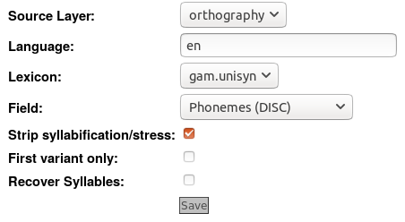

Phonemic Tagging with the Unisyn lexicon
LaBB-CAT includes the Unisyn layer manager, which is designed for ingesting Unisyn accent-specific lexicons. Unisyn must be downloaded separately, and the included scripts executed to produce a lexicon for the desired variety. The resulting file can be added to LaBB-CAT, and then the layer manager can be configured to use it for tagging word tokens with their phonemic transcriptions.
Unisyn is a ‘master lexicon’ of English, which contains:
- orthography
- part-of-speech
- pronunciation, in an ‘accent neutral’ form
- ‘enriched orthography’ showing morphological information
- frequency, as derived from various sources, including the British National Corpus, Time articles, Gutenberg, etc.
The pronunciations in the lexicon can be converted into an accent-specific form using perl scripts that are included with the lexicon.
Getting Unisyn
Unisyn is available under a non-commercial license, and must be acquired seperately from this layer manager. To acquire Unisyn, you must first register on the the Unisyn website and accept the terms of their license. The Unisyn website is here:
http://www.cstr.ed.ac.uk/projects/unisyn/
(This layer manager has been tested with version 1.3 of Unisyn)
Install the Layer Manager
First, the Unisyn layer manager module must be installed:
- Select the layer managers menu option.
- Follow the List of layer managers that are not yet installed link near the bottom.
- Find “Unisyn” in the list, and press its Install button, then Install again.
Once the layer manager is installed, you’ll see a page of information explaining more details about the layer manager. Once you’ve read this information, you can close the browser tab to return to LaBB-CAT.
Using Unisyn with this layer manager
Once you’ve got Unisyn, you can use it to produce accent-specific lexicons, and provide these lexicons to the layer manager, which then uses them to annotate words in LaBB-CAT.
For example, if you want to annotate your transcripts with ‘General American English’ pronunciations:
- Generate the General American English (gam) lexicon by running the following Unisyn commands:
get-exceptions.pl -a gam -f unilex > gam.1post-lex-rules.pl -a gam -f gam.1 > gam.2map-unique.pl -a gam -f gam.2 > gam.unisyn. This gives you the file gam.unisyn, which is the lexicon file you need for the next step.
- Upload the accent-specific lexicon into LaBB-CAT:
- Select layer managers on the menu.
- Find the Unisyn layer manager in the list, and click the Extensions button (the second-to-last button on the right).
- Press Choose File and select the gam.unisyn file you generated above.
- Press Upload Lexicon.
You will see a progress bar while the file is uploaded and the data is processed.
- Create the layer for your pronunciation annotations: To create a new layer with CMUdict annotations:
- Select the word layers option on the menu - this will display a list of all the word layers you already have in the database.
- At the top of the list, there’s a blank form for creating a new layer - fill this form in:
- Layer ID: enter a name - e.g.
phonemes - Type: select Phonological
- Manager: select Unisyn
- Alignment: select None (as these are simply tags on the orthographic words)
- Generate: select Always
- Description: something like
All possible pronnunciations according to Unisyn’s General American accent-specific lexicon
- Layer ID: enter a name - e.g.
- Press the New button to create the layer. You will see the layer configuration page. Check the online help for explanations of all options, but at least:
- Ensure the Source Layer is orthography
- Select the desired Lexicon from the list (these relate to the file or files you generated and uploaded above)
- Tick the Strip syllabification/stress if you will use this layer for forced alignment with HTK. 
- Press Save
- Press Regenerate. You will see a progress bar while the layer manager annotates all the transcripts that have already been uploaded.
LaBB-CAT will then generate annotations for all the transcripts you already have in your database. If you have a lot of data, this may take a while.
From now on, when you upload a new transcript, the Unisyn annotations will automatically be generated for it.
Mapping Unisyn pronunciations to the DISC phoneme set
LaBB-CAT’s processing of phonological layers assumes that the annotations use the DISC phoneme set designed for the CELEX phonemic transcriptions. This set is used because each phoneme is expressed by precisely one ASCII character, including phonemes usually expressed using a digraph - e.g. affricates like /tʃ/ (which is /J/ in DISC) and diphthongs like /aɪ/ (which is /2/ in DISC)
Unisyn transcriptions use a set of phones that is greater that the set of phones available in DISC, and the transcriptions are designed to be broadly phonetic, not phonemic.
This means that using the DISC representation of the transcripts is imperfect, as there is a certain amount of loss of information when mapping Unisyn phones to DISC phonemes. The default mapping that is used is shown below.
| Unisyn | DISC | IPA | Lexical set e.g. | |
|---|---|---|---|---|
| ah | → | # | Ɑ: | BATH |
| aa | → | Q | ɒ | PALM → LOT |
| ar | → | Q | ɒ | start → PALM → LOT |
| oa | → | { | æ | BANANA → TRAP |
| ao | → | # | ɑ: | MAZDA → BATH |
| e | → | E | ε | DRESS |
| er | → | E | ε | r-coloured DRESS in scots en |
| a | → | { | æ | TRAP |
| eh | → | { | æ | ann use TRAP |
| ou | → | 5 | əʊ | GOAT - but a monophthong for in some varieties |
| oul | → | 5 | əʊ | goal - post vocalic GOAT |
| ouw | → | 5 | əʊ | KNOW → GOAT (except for Abergave) |
| o | → | Q | ɒ | LOT |
| oou | → | Q | ɒ | adios → LOT |
| au | → | Q | ɒ | CLOTH → LOT (but a diphthong in some en-US) |
| oo | → | $ | ɔ: | THOUGHT (but a diphthong in some varieties) |
| or | → | $ | ɔ: | r-coloured THOUGHT |
| ii | → | i | i: | FLEECE |
| iy | → | i | i: | HAPPY - I for some varieties |
| ie | → | i | i: | HARRIET - Leeds only |
| ii; | → | i | i: | AGREED → FLEECE |
| ir | → | i | i: | NEARING - r-coloured NEAR → FLEECE |
| ir; | → | i | i: | near - scots-long NEAR → FLEECE |
| i | → | I | ɪ | KIT |
| @ | → | @ | ə | schwa |
| @r | → | @ | ə | r-coloured schwa |
| uh | → | V | ʌ | STRUT |
| u | → | U | ʊ | FOOT |
| uu | → | u | u: | GOOSE |
| iu | → | u | u: | BLEW → GOOSE |
| uu; | → | u | u: | brewed → GOOSE |
| uw | → | u | u: | louise → GOOSE |
| uul | → | u | u: | goul - post-vocalic GOOSE |
| ei | → | 1 | eɪ | FACE |
| ee | → | 1 | eɪ | WASTE → FACE (except for abercrave) |
| ai | → | 2 | aɪ | PRICE |
| ae | → | 2 | aɪ | TIED → PRICE (except Edi and Aberdeen) |
| ae | → | 2 | aɪ | TIED → PRICE (except Edi and Aberdeen) |
| aer | → | 2 | aɪ | FIRE - r-coloured PRICE |
| aai | → | 2 | aɪ | TIME → PRICE (except S. Carolina) |
| oir | → | 2 | aɪ | COIR - r-coloured PRICE |
| @@r | → | 3 | ɜ: | NURSE |
| oi | → | 4 | ɔɪ | CHOICE |
| ow | → | 6 | aʊ | MOUTH |
| owr | → | 6 | aʊ | HOUR - r-coloured MOUTH |
| oow | → | 6 | aʊ | HOUR → MOUTH (exception S. Carolina) |
| i@ | → | 7 | ɪə | NEAR |
| iir | → | 7 | ɪə | beard → NEAR (except en-AU) |
| eir | → | 8 | εə | SQUARING (actually a monophthong in many varieties) |
| ur | → | 9 | ʊə | JURY |
| ur; | → | 9 | ʊə | CURE - scots-long JURY |
| iur | → | 9 | ʊə | curious - JURY exception in Cardiff & Abercrave |
| p | → | p | p | |
| t | → | t | t | |
| ? | → | ? | ʔ | (glottal stop) |
| t^ | → | L | ɾ | butter/merry flap |
| k | → | k | k | |
| x | → | x | x | loch |
| b | → | b | b | |
| d | → | d | d | |
| g | → | g | g | |
| ch | → | J | ʧ | |
| jh | → | _ | ʤ | |
| s | → | s | s | |
| z | → | z | z | |
| sh | → | S | ʃ | |
| zh | → | Z | ʒ | |
| f | → | f | f | |
| v | → | v | v | |
| th | → | T | θ | |
| dh | → | D | ð | |
| h | → | m | m | |
| m | → | m | m | |
| m! | → | F | m̩ | chasm |
| n | → | n | n | |
| n! | → | H | n̩ | mission |
| ng | → | N | ŋ | |
| l | → | l | l | |
| ll | → | l | l | llandudno (for Cardiff and Abercrave, this is different) |
| lw | → | l | l | feel - dark l |
| r | → | r | r | |
| y | → | j | j | |
| w | → | w | w | which |
| hw | → | w | w | which |
Changing the DISC symbol mapping
If you would like to adjust this mapping, so that Unisyn symbols correspond to different DISC symbols, you can do so by visitin the Unisyn Layer Manager’s Extensions page, and following the dictionary’s ‘Phoneme Map’ link, as shown in Figure 1
This page allows you to change how Unisyn symbols correspond to DISC symbols, as seen in Figure 2. You can change symbols/text in the text boxes, and then save your changes with the save button that appears at the bottom of the list.
Other possible phoneme encodings
If having the original transcriptions precisely as defined in the Unisyn lexicon is very important, you can instead create a layer that uses the original transcription as contained in the file you uploaded. This has the advantage that the transcriptions are not filtered through the above mapping, and the disadvantage that LaBB-CAT won’t be able to display the transcriptions using IPA symbols, nor help you when creating search patterns for the layer.
If you decide to do this, Unisyn offers you two possible representations:
- Unisyn transcriptions - e.g.
{ p r @ . n ~ uh n s $}.> ii . * ei . sh n! >- these are already present in the file that you generated if you followed the instructions above (i.e.gam.unisyn) - SAM-PA transcriptions - e.g.
pr\@%nVns$i"e$Sn=$@5- these can be obtained by running an extra Unisyn command, and uploading the resulting gam.sampa file:
output-sam.pl -a gam -f gam.unisyn > gam.sampa
(Unisyn has a third script called output-ipa.pl which produces transcriptions for displaying in HTML - e.g. pɹəˌnʌns.iˈe.ʃn ̩ - which are not suitable for search, analysis, or forced-alignment)
In order to prevent the DISC mapping from applying on your layer:
- When creating the layer, set the layer type to Text rather than Phonological.
- When configuring the layer, set the field to Phonemes (original file) rather than Phonemes (DISC).